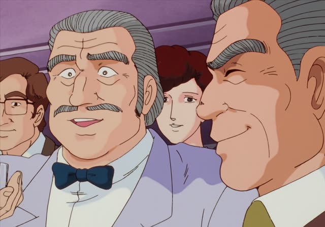
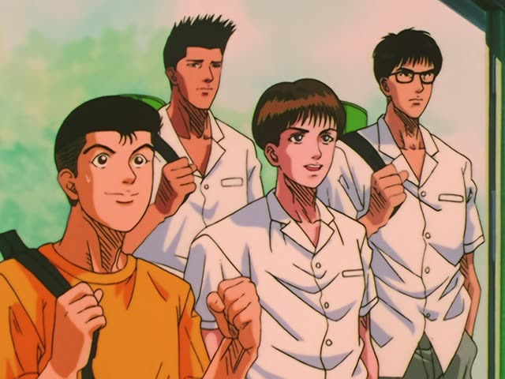

～てもかまわない
| Polite | ～てもかまいません |
|---|---|
| Casual | ～てもかまわない・かまわん かまわん: rougher, older |
Same meaning: "it's fine if, I don't mind". Only the politeness changes.
Oishinbo · Episode 41
フッ、私はかまいませんよ。
"Heh. I don't mind." [a rematch tomorrow]
～てもかまわない means "it's fine if, I don't mind if": 寝てもかまわない, "it's fine if you sleep". It works like ～てもいい, but sounds a bit more serious.
On its own, かまわない (polite: かまいません) just means "I don't mind". On this card, Yuzan agrees to a rematch, cool as ever. かまいません makes it polite.
Rough and older-sounding: かまわん.
Vinland Saga · Episode 3
多少船が傷ついても構わん、やれ！
"I don't care if the ship gets a little damaged. Do it!"
On this card, Askeladd orders the ramming. 傷ついても構わん: even if the ship gets hurt, it's fine.
Quick Examples
At an office.
ここに座ってもかまいませんか？
"Do you mind if I sit here?"
Polite question: てもかまいませんか.
PoliteYour friend apologizes for being late.
遅れてもかまわないよ。
"It's fine if you're late."
CasualA clerk at a shop.
カードで払ってもかまいませんよ。
"You can pay by card."
PoliteYour roommate asks about the TV.
うん、かまわないよ。
"Sure, I don't mind."
Alone: "I don't mind".
CasualWith and without
ここで待ってください。
"Please wait here." A request.
ここで待ってもかまいません。
"You may wait here (it's fine with me)."
Examples from Media
Death Note · Episode 32
はい、かまいません。
"Yes, I don't mind."

Oishinbo · Episode 28
構いませんよ、どうぞ。
"That's fine, go ahead."
Samurai Champloo · Episode 17
今度見かけたら、斬り捨てて構わん。
"Next time you see him, you may cut him down."
Odd Taxi · Episode 9
死んでもかまわないんじゃなかったのかよ！
"Weren't you fine with dying?!"
で-verb: 死んでもかまわない.
Shirokuma Cafe · Episode 4
いや、寝ててもかまわないけど。
"Nah, I don't mind if you sleep."
Whisper of the Heart
ご…誤解されるぐらい構わないけど。
"I-I don't mind being misunderstood."
Kekkon Dekinai Otoko · Episode 4
多い分にはかまわないよ。
"More is fine."

Slam Dunk · Episode 97
俺はかまわないぞ、赤木。
"I don't mind, Akagi."